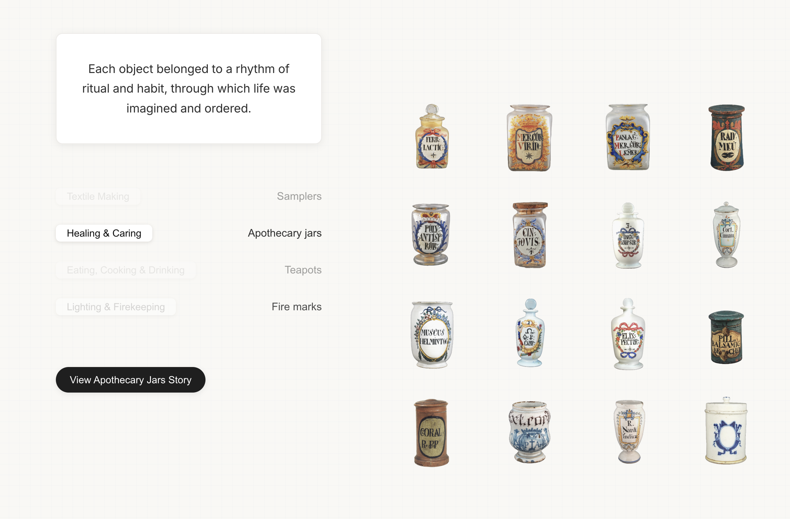
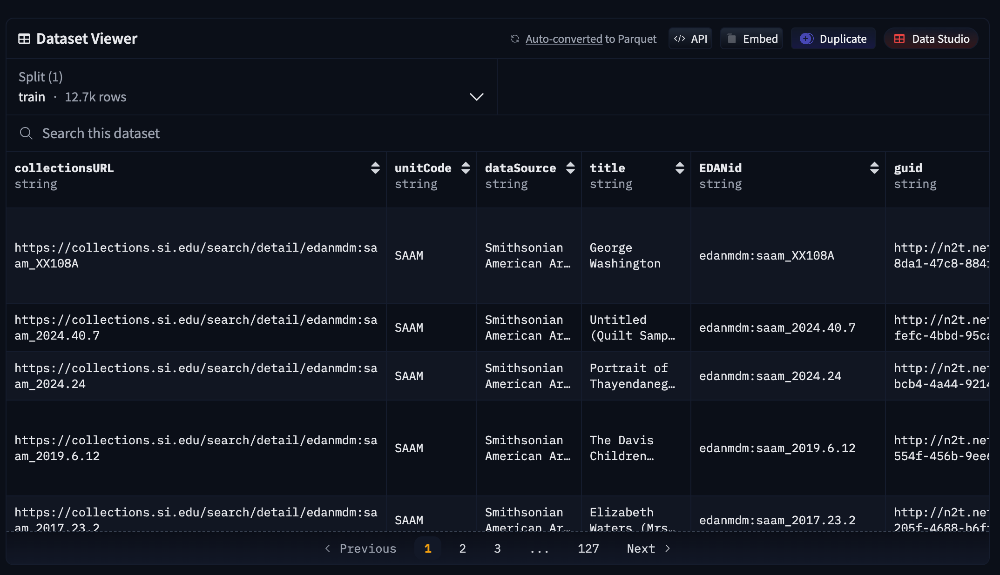
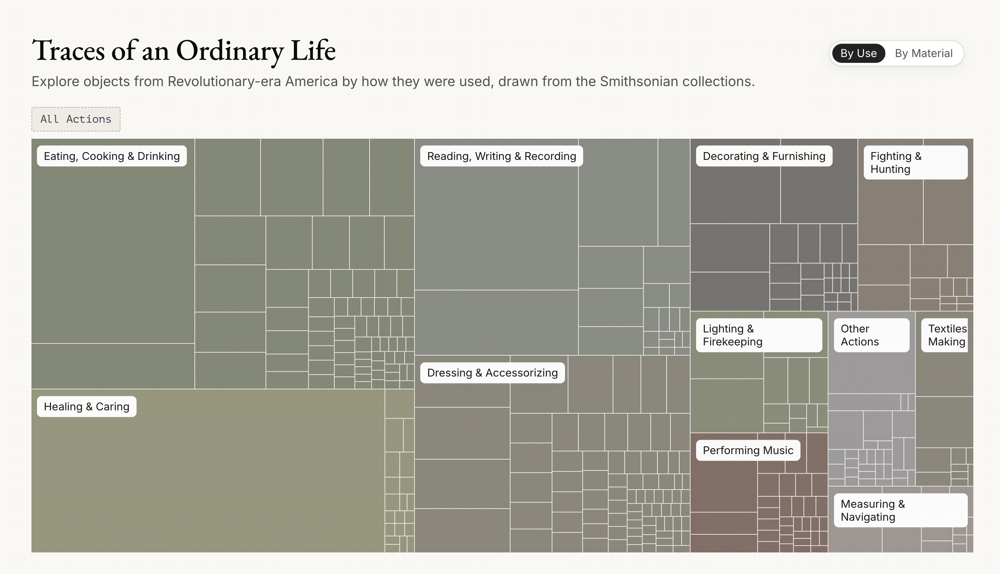
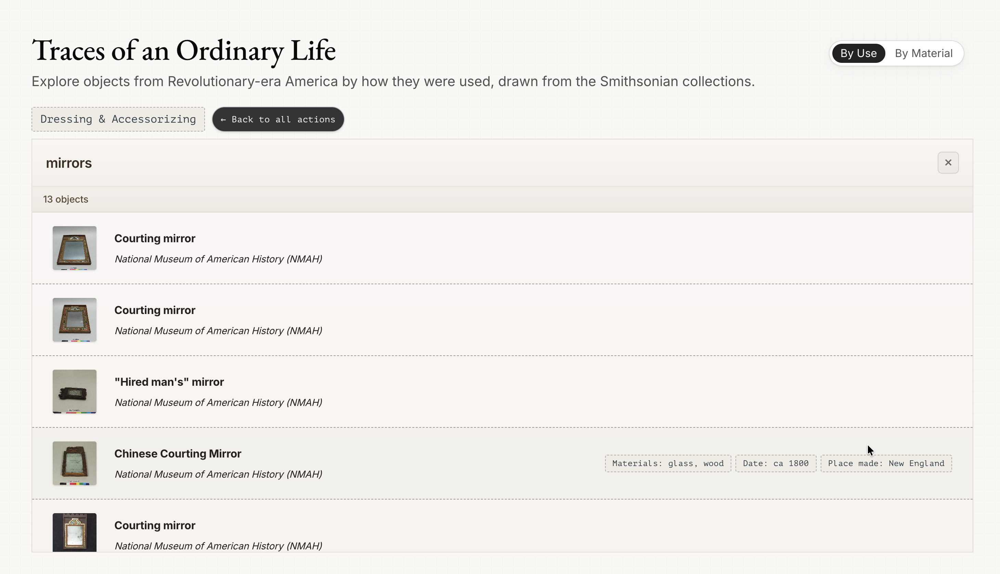
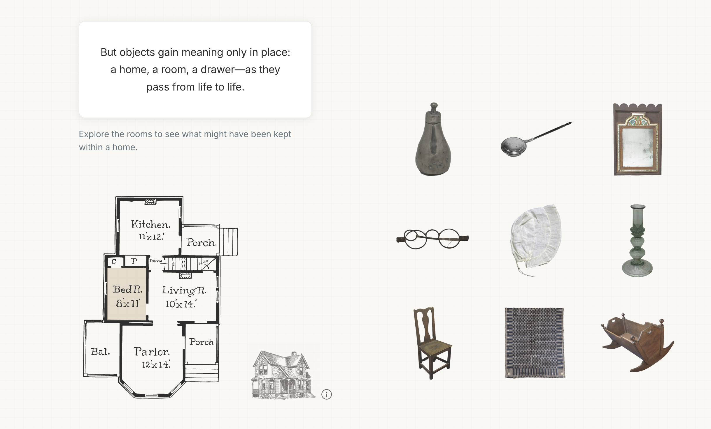

An interactive archive of the American Revolutionary period, viewed through the material traces of everyday life. Drawing from 12,667 Smithsonian records, it explores how ordinary objects offer a glimpse into how life was built, organized, and imagined.
See live site ↗The Smithsonian Open Access Initiative aims to expand the utility, discoverability, and accessibility of the museums’ collections and data. In the context of the United States’ anniversary, the challenge was to create new entry points into the American Revolutionary collections, making this material easier to navigate and connect with at scale.
The Ordinaries shifts attention away from monuments and heroes and toward the objects people used in their everyday. It begins from a simple premise: what people crafted, traded, and cared for offers a glimpse into how their world was built, organized, and imagined.
At its core is a new classification system: a taxonomy of the ordinary, organized not by object type but by action.

The dataset draws from the Smithsonian’s Revolution Crossroads open-access corpus: 12,667 object records and nearly 4,000 images from four museums, dating roughly from 1770 to 1810.
Object descriptions were cleaned and parsed in Python, with materials extracted using regex and grouped into material families. Objects were then classified by action family through a hybrid approach combining LLM-based tagging with manual review. Images were fetched dynamically via the Smithsonian Open Access API.

The site unfolds as a continuous exploration of the archive, moving from individual objects to broader patterns. It begins with a curated selection that situates artifacts within the rhythms of everyday life. An interactive treemap then opens up the full dataset, revealing a taxonomy of the ordinary across action families and materials.


The final view returns to the objects through a domestic lens: a room-by-room structure drawn from a late 19th-century American home, situating them within the spatial context of everyday life.
